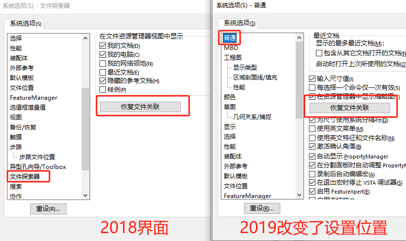
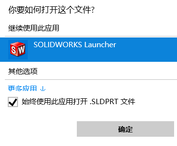

文件右键功能问题
在 Windows® 文件资源管理器中右键单击 SOLIDWORKS 文件时，为什么不会出现包括“打包”、“重命名”、“替换”和“移动”的 SOLIDWORKS® 菜单？。
方法 1：选项设置
右键单击并以管理员身份运行 SOLIDWORKS。转到“常规”选项卡，然后单击“恢复文件关联”
在 SOLIDWORKS 2019 及更早版本中，恢复文件关联”按钮位于“文件资源管理器”选项卡下。
在 SOLIDWORKS 2020 及更高版本中，恢复文件关联位于常规选项卡下。
方法 2：启动程序
检查是否是“SOLIDWORKS Launcher”为默认打开程序。其他启动程序是没有右键功能的
方法 2：安装修复
修复您的 SOLIDWORKS 安装。
方法 3：手动注册
如果“C:\Program Files\Common Files\SOLIDWORKS Shared”文件夹中缺少文件或其版本不正确，则会出现此情况。可以重新注册以下 DLL 文件：
1 | C:\Program Files\Common Files\SOLIDWORKS Shared\sldshellutils14u.dll |
1.以管理员身份打开 Windows 命令提示符。
2.在命令提示符中输入：cd [DLL 路径]
3.接着输入：regsvr32 sldshellutils14u.dll